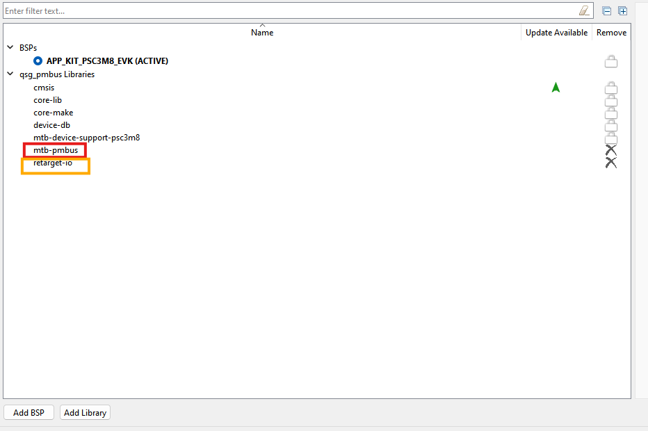
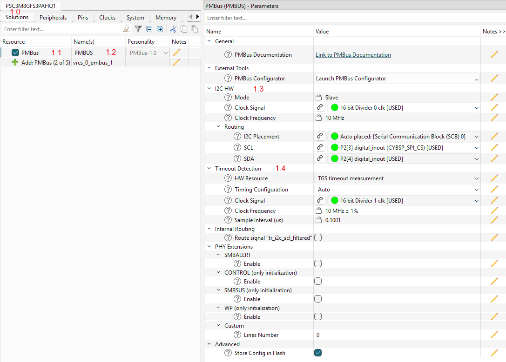
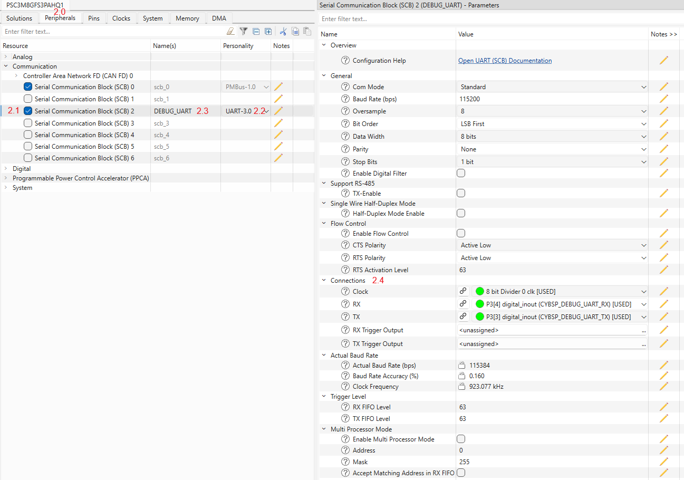
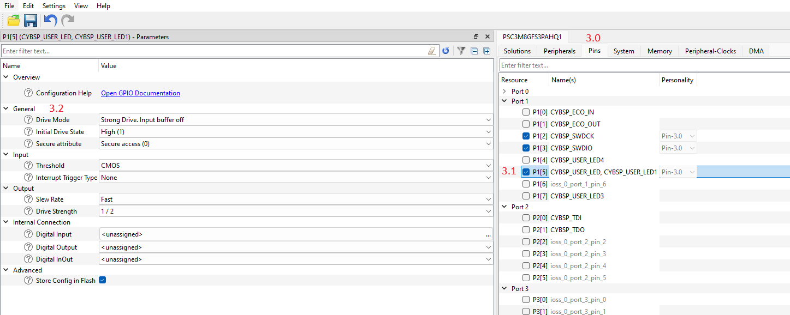
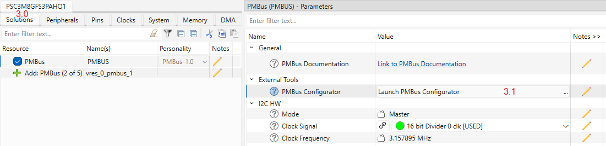
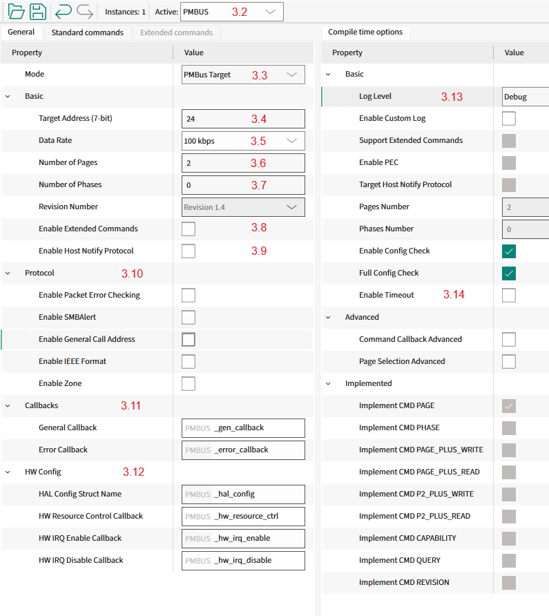
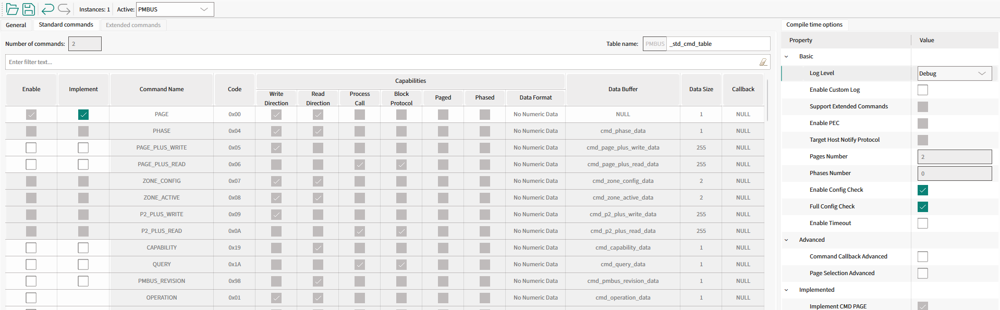
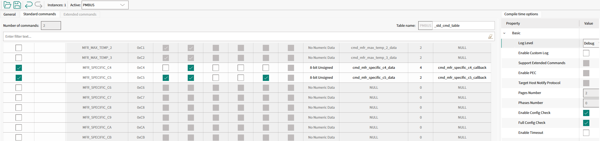

This section provides a guide to quickly get started with the PMBus middleware using Solution personality. Namely: how to set up the PMBus middleware in your project, configure the necessary hardware, and implement the basic PMBus target functionality.
1. Add mtb-pmbus middleware to your project

- If you work in the ModusToolbox IDE, use the ModusToolbox Library Manager to add the mtb-pmbus middleware to your project. Otherwise, ensure that mtb-pmbus middleware is included into your project.
Note: Middleware uses printf() for logging purposes. To use printf() for the terminal output, add retarget-io middleware from the Library Manager or in any other way.
2. Configure SCB blocks, timeout Timer, GPIO pins
- Open the Device Configurator and go to the Solutions tab (#1.0).
- Add a new PMBus instance to your project (#1.1).
- Select a name for the newly created PMBus instance (e.g., PMBUS, #1.2).
- "I2C_HW" section (#1.3) - select:
- the desired SCB block
- the desired Clock for the selected SCB block
- "I2C_HW->Routing" section - select:
- the desired pins for SDA and SCL lines, the Device Configurator will automatically configure them into Open Drain mode.
- "Timeout Detection" section (#1.4) - select the timeout detection option and select Clock for it:
- TGS (Time Guard Support), uses the SCB block time guard feature to detect the timeout conditions on the I2C bus.
- TCPWM (Timer Counter Pulse Width Modulator), uses a dedicated timer to detect the timeout conditions on the I2C bus.
Note: The selection of the timeout detection option depends on the device.

- In the Peripherals tab (#2.0), enable the SCB block under Communication (#2.1) and select the UART personality (#2.2). Select the desired name for the SCB (#2.3). This block will be used for the debug output.
- Select the desired pins and clock for the SCB (#2.4). The other UART options can be set by default, see the screenshot.

- Switch to the Pins tab (#3.0) and enable any User LED GPIO pin (#3.1). In the "General" section (#3.2), select the Strong Drive, input buffer-off Drive mode.

3. Configure PMBus instance
- In the Solutions tab (#3.0), open the PMBus Configurator (#3.1).

- Set the operation mode of the PMBus instance (#3.2) to Target (#3.3).
- Define the Target device address (#3.4).
- Select the desired data rate (#3.5).
- Select the number of supported Pages by PMBus middleware (#3.6).
- Select the number of supported Phases by PMBus middleware (#3.7).
- Disable the support for Extended Commands (#3.8) - not needed.
- Disable the Host Notify Protocol support (#3.9) and other PMBus features (#3.10) to simplify the example.
- Use the default names for Target callbacks (#3.11) and other PMBus data types (#3.12).
- Set the log level to Debug (#3.13).
- Disable the PMBus timeout detection to simplify the example (#3.14).

- Unselect any unnecessary pre-implemented commands as shown in the picture below.

- Configure the manufacturer-specific commands as shown in the picture below.
- cmd_mfr_specific_c4_callback, cmd_mfr_specific_c4_data
- cmd_mfr_specific_c5_callback, cmd_mfr_specific_c5_data

- Select File->Save to generate initialization code.
Warning: Important! Save the PMBus configuration using the PMBus Configurator.
4. Add PMBus code to your project
This section describes the implementation of the PMBus target device. The implementation supports the Quick Command and Read 32 protocols, PAGE command and Write/Read Word protocols with pages.
Step 1. Include the necessary headers files in the main.c file:
#include "mtb_pmbus.h"
#include "cybsp.h"
#include "cy_retarget_io.h"
Step 2. Set the project defines:
#define PMBUS_DEVICE_ADDRESS (0x18U)
#define PMBUS_CMD_TABLE_SIZE (2U)
#define PMBUS_TOTAL_NUM_PAGES (2U)
#define PMBUS_TEST_CMD_1_CODE (0xC4U)
#define PMBUS_TEST_CMD_1_SIZE (4U)
#define PMBUS_TEST_CMD_2_CODE (0xC5U)
#define PMBUS_TEST_CMD_2_SIZE (2U)
#define PMBUS_TEST_CMD_2_PAGES (2U)
Step 3. Create variables for:
Debug UART HAL object and context:
static cy_stc_scb_uart_context_t DEBUG_UART_context;
static mtb_hal_uart_t DEBUG_UART_hal_obj;
I2C context:
static cy_stc_scb_i2c_context_t i2c_pdl_context;
PMBus instance:
Instance structure.
Definition mtb_pmbus_trgt.h:858
Example data:
volatile uint32_t user_led_toggled_cnt = 0U;
volatile uint16_t user_data = 0U;
Step 4. Implement the General event callback function:
{
{
printf("Gen: MTB_PMBUS_QUICK_CMD_WR_EVENT\n\r");
Cy_GPIO_Inv(CYBSP_USER_LED_PORT, CYBSP_USER_LED_PIN);
user_led_toggled_cnt++;
printf("User LED toggled\n\r");
}
}
mtb_pmbus_events_t
General events for PMBus Middleware.
Definition mtb_pmbus_trgt.h:322
@ MTB_PMBUS_QUICK_CMD_WR_EVENT
Quick command event with Write bit.
Definition mtb_pmbus_trgt.h:327
Step 5. Implement the error event callback function:
void PMBUS_error_callback(uint32_t events, uint8_t cmd_code, bool cmd_is_ext)
{
(void)events;
(void)cmd_code;
(void)cmd_is_ext;
}
Step 6. Implement the PMBus command callback functions:
{
(void) page;
(void) phase;
(void) byte;
{
printf("\n\rCMD1 match\n\r");
}
{
printf("\n\rCMD1 read request\n\r");
uint32_t tmp = user_led_toggled_cnt;
printf("Data buffer for read: 0x%02X\n\r", cmd_mfr_specific_c4_data[0U]);
}
return true;
}
void mtb_pmbus_cmd_update_data_isr(mtb_pmbus_stc_t *inst, uint32_t code, uint8_t *data, uint32_t data_size)
Update the data buffer for the selected command with new data.
Definition mtb_pmbus_trgt_cmd.c:235
mtb_pmbus_cmd_events_t
Command specific events.
Definition mtb_pmbus_trgt.h:352
@ MTB_PMBUS_CMD_MATCH
Command match event.
Definition mtb_pmbus_trgt.h:359
@ MTB_PMBUS_CMD_READ_REQ
Read data is requested.
Definition mtb_pmbus_trgt.h:377
{
(void) byte;
(void) phase;
{
printf("\n\rCMD2 match\n\r");
uint16_t tmp = user_data;
printf("Data buffer for page %" PRId32 ": 0x%02X 0x%02X\n\r", page, cmd_mfr_specific_c5_data[page][0U], cmd_mfr_specific_c5_data[page][1U]);
}
{
printf("\n\rCMD2 write done\n\r");
printf("Data buffer after write for page %" PRId32 ": 0x%02X 0x%02X\n\r", page, cmd_mfr_specific_c5_data[page][0U], cmd_mfr_specific_c5_data[page][1U]);
uint16_t tmp;
user_data = tmp;
}
return true;
}
void mtb_pmbus_cmd_read_data_ext_isr(mtb_pmbus_stc_t *inst, uint32_t code, int32_t page, int32_t phase, uint8_t *data, uint32_t data_size)
Read the data from the buffer for the selected command, page and phase.
Definition mtb_pmbus_trgt_cmd.c:248
void mtb_pmbus_cmd_update_data_ext_isr(mtb_pmbus_stc_t *inst, uint32_t code, int32_t page, int32_t phase, uint8_t *data, uint32_t data_size)
Update the data buffer for the selected command, page and phase with the new data.
Definition mtb_pmbus_trgt_cmd.c:172
@ MTB_PMBUS_CMD_WRITE_DONE
Write is completed.
Definition mtb_pmbus_trgt.h:372
Step 7. Implement the I2C interrupt handler function:
void PMBUS_i2c_isr(void)
{
}
void mtb_pmbus_i2c_isr(mtb_pmbus_stc_t *inst)
PMBus Target interrupt service routine.
Definition mtb_pmbus_trgt_hal.c:68
Step 8. Implement the callback functions for:
Enabling and disabling the I2C:
{
{
Cy_SCB_I2C_Enable(PMBUS_I2C_HW);
}
{
Cy_SCB_I2C_Disable(PMBUS_I2C_HW, &i2c_pdl_context);
}
}
mtb_pmbus_hw_resources_ctrl_action_t
I2C HW actions.
Definition mtb_pmbus_trgt.h:527
@ MTB_PMBUS_HW_RESOURCES_ENABLE
Enable the I2C HW.
Definition mtb_pmbus_trgt.h:529
@ MTB_PMBUS_HW_RESOURCES_DISABLE
Disable the I2C HW.
Definition mtb_pmbus_trgt.h:531
Enabling and disabling I2C interrupts:
void PMBUS_hw_irq_enable(void)
{
NVIC_EnableIRQ((IRQn_Type) PMBUS_I2C_IRQ);
}
void PMBUS_hw_irq_disable(void)
{
NVIC_DisableIRQ((IRQn_Type) PMBUS_I2C_IRQ);
}
Step 9. Implement the PMBus HAL configuration structure:
{
.hw_ptr = PMBUS_I2C_HW,
.pdl_i2c_context = &i2c_pdl_context,
};
HAL Configuration structure.
Definition mtb_pmbus_trgt_hal.h:78
Step 10. (From this step add code to the main() function) Create variables for the result statuses:
cy_rslt_t result;
cy_en_scb_uart_status_t init_status;
Step 11. Initialize the device and board peripherals:
result = cybsp_init();
if (result != CY_RSLT_SUCCESS)
{
CY_ASSERT(0);
}
Step 12. Initialize the UART for debug output:
init_status = Cy_SCB_UART_Init(DEBUG_UART_HW, &DEBUG_UART_config, &DEBUG_UART_context);
if (init_status!=CY_SCB_UART_SUCCESS)
{
CY_ASSERT(0);
}
Cy_SCB_UART_Enable(DEBUG_UART_HW);
result = mtb_hal_uart_setup(&DEBUG_UART_hal_obj, &DEBUG_UART_hal_config,
&DEBUG_UART_context, NULL);
if (result != CY_RSLT_SUCCESS)
{
CY_ASSERT(0);
}
result = cy_retarget_io_init(&DEBUG_UART_hal_obj);
if (result != CY_RSLT_SUCCESS)
{
CY_ASSERT(0);
}
printf("\x1b[2J\x1b[;H");
printf("************************************************************\r\n");
printf("PMBus Quick Start Guide CE\r\n");
printf("************************************************************\r\n\n");
Step 13. Enable irq:
Step 14. Initialize the I2C hardware:
Cy_SCB_I2C_Init(PMBUS_I2C_HW, &PMBUS_I2C_config, &i2c_pdl_context);
cy_stc_sysint_t i2c_isr_cfg =
{
.intrSrc = PMBUS_I2C_IRQ,
.intrPriority = 3U
};
Cy_SysInt_Init(&i2c_isr_cfg, PMBUS_i2c_isr);
#define MTB_PMBUS_LOG_INF(_fmt,...)
Logs an informational message.
Definition mtb_pmbus_log.h:108
Step 15. Initialize the PMBus middleware instance:
{
}
else
{
{
}
}
mtb_pmbus_status_t mtb_pmbus_enable(mtb_pmbus_stc_t *inst)
Enable PMBus Middleware.
Definition mtb_pmbus_trgt.c:268
mtb_pmbus_status_t mtb_pmbus_init(mtb_pmbus_stc_t *inst, mtb_pmbus_stc_config_t const *config)
Initialize the PMBus Middleware.
Definition mtb_pmbus_trgt.c:58
#define MTB_PMBUS_LOG_DBG(_fmt,...)
Logs a debug message.
Definition mtb_pmbus_log.h:120
mtb_pmbus_status_t
Used to return the statuses of most PMBus APIs.
Definition mtb_pmbus_trgt.h:280
@ MTB_PMBUS_STATUS_SUCCESS
Correct status.
Definition mtb_pmbus_trgt.h:282
5. Verify Target Mode Workability
See Verify Target Mode Workability for verification steps.